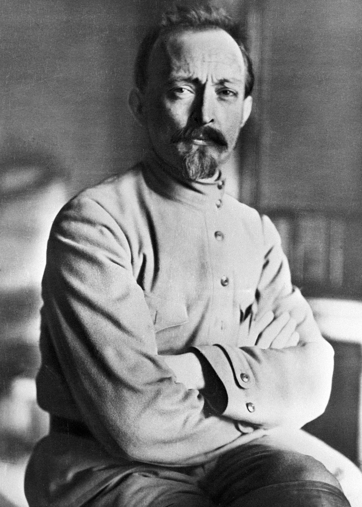
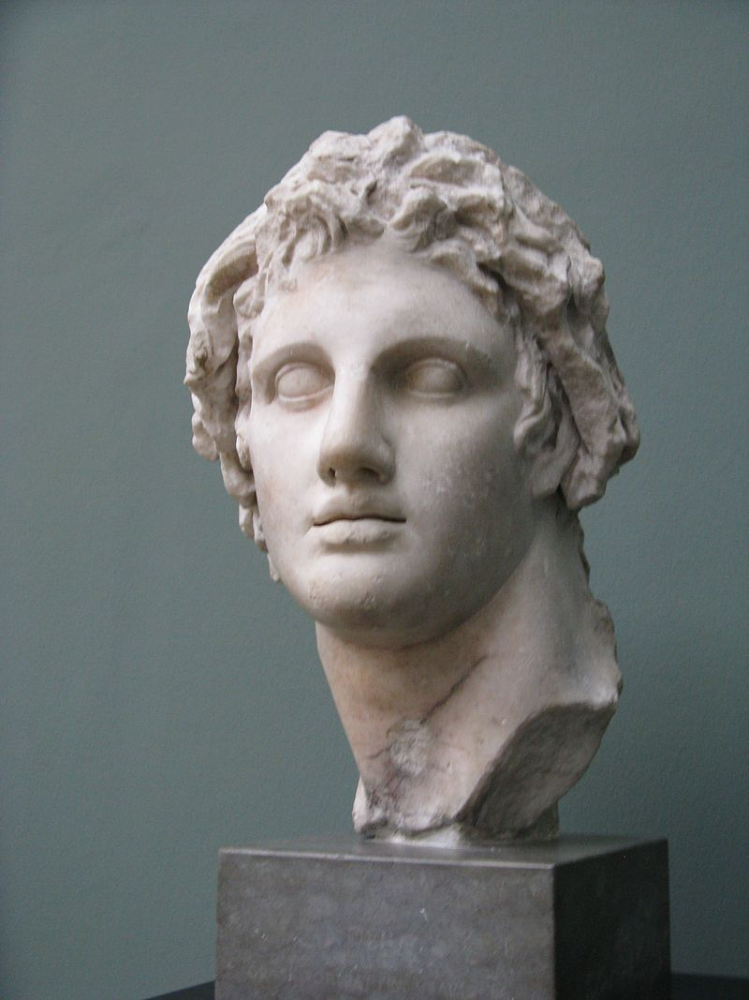
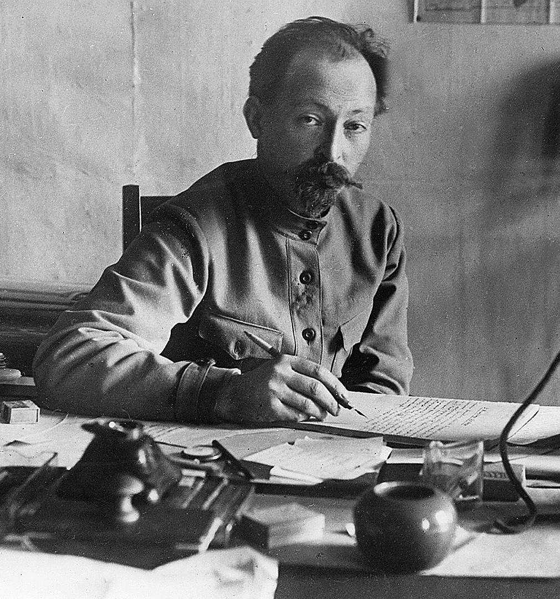

Российский и польский революционер, советский государственный и партийный деятель
Глава ряда народных комиссариатов, основатель и глава ВЧК.Российский и польский революционер, советский государственный и партийный деятель
Глава ряда народных комиссариатов, основатель и глава ВЧК.Вёл активную подготовку Октябрьской революции, организовывал отряды Красной Гвардии в Москве. Во время революции 25 октября руководил захватом Главного почтамта и телеграфа.

Выдающийся полководец
Царь Древней Македонии из династии Аргеадов, создатель мировой державы, распавшейся после его смерти. Взойдя на престол в возрасте 20 лет после гибели отца, Филиппа II, он подавил восстание фракийцев и заново подчинил Грецию, где были разрушены мятежные Фивы. В 334 году до н. э. Александр переправился в Малую Азию, начав таким образом войну с Персидской державой. При Гранике он разгромил сатрапов, а при Иссе - самого царя Дария III, после чего подчинил Сирию, Палестину и ЕгипетВыдающийся полководец
Царь Древней Македонии из династии Аргеадов, создатель мировой державы, распавшейся после его смерти. Взойдя на престол в возрасте 20 лет после гибели отца, Филиппа II, он подавил восстание фракийцев и заново подчинил Грецию, где были разрушены мятежные Фивы. В 334 году до н. э. Александр переправился в Малую Азию, начав таким образом войну с Персидской державой. При Гранике он разгромил сатрапов, а при Иссе - самого царя Дария III, после чего подчинил Сирию, Палестину и Египет
Российский и польский революционер, советский государственный и партийный деятель
Российский и польский революционер, советский государственный и партийный деятель. Глава ряда народных комиссариатов, основатель и глава ВЧК.Российский и польский революционер, советский государственный и партийный деятель
Российский и польский революционер, советский государственный и партийный деятель. Глава ряда народных комиссариатов, основатель и глава ВЧК.Вёл активную подготовку Октябрьской революции, организовывал отряды Красной Гвардии в Москве. Во время революции 25 октября руководил захватом Главного почтамта и телеграфа.
Российский революционер, крупный теоретик марксизма
Советский политический и государственный деятель, создатель Российской социал-демократической рабочей партии (большевиков), главный организатор и руководитель Октябрьской революции 1917 года в России, первый председатель Совета народных комиссаров РСФСР и Совета народных комиссаров СССР, создатель первого в мировой истории социалистического государства.Российский революционер, крупный теоретик марксизма
Советский политический и государственный деятель, создатель Российской социал-демократической рабочей партии (большевиков), главный организатор и руководитель Октябрьской революции 1917 года в России, первый председатель Совета народных комиссаров РСФСР и Совета народных комиссаров СССР, создатель первого в мировой истории социалистического государства.Марксист, публицист, идеолог и создатель Третьего (Коммунистического) интернационала, основатель Союза Советских Социалистических Республик. Сфера основных политико-публицистических работ — материалистическая философия, теория марксизма, критика капитализма и империализма, теория и практика осуществления социалистической революции, построения социализма и коммунизма, политическая экономия социализма.